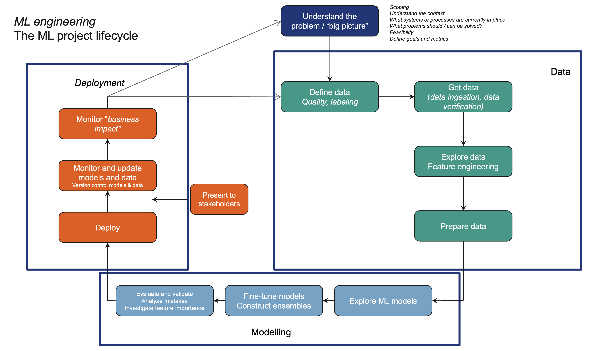

DAT255: Deep learning engineering
Lecture 20 – ML operations
Application deadline
April 15
The ML project lifecycle

Static vs dynamic training
Two approaches to model training:
Static (offline) training:
Train a single model once, deploy it, and keep using it for a while
Pros:
- Model can be thoroughly tested
- Deployment needs only be done once
Cons:
- Data must be unchanging over time
Dynamic (online) training:
(Re)-train models continuously when new data comes in, and serve the most recent
Pros:
- Model always up-to-date with shift/fluctuations in data
Cons:
- Potentially high cost of training and deployment cycle
- Each model may not be thoroughly tested
MLOps: Machine Learning Operations
Take
- Continuous integration (CI) and
- Continuous delivery (CD)
from DevOps, but adapt it to include data processing and add
No hard rules on how to organise
your ML workflow, but worth thinking
about.
The MLOps philosophy is one
(popular) option.
MLOps levels
Level 0: All processes are done manually
The obvious starting point for any ML project.
- Data preparation, model training, validation etc. performed by hand
- Most code is experimental
- Model development and deployment are completely separate
- Infrequent release iterations
MLOps levels
Level 1: Pipeline automation
Set up automated processes for data preparation and model training
Automatically…
- Retrain models when new data is available (CT)
- Run standarised performance tests
- Deploy new model versions
At level 0 we deployed a final model, while at level 1 we deploy an entire training pipeline.
MLOps levels
Level 2: Add CI/CD pipeline automation
Allows new model development to be integrated quickly
Requires more support structure:
- Integration testing
- Additional model metrics (latency, throughput, …)
- Model metadata store
- Advanced pipeline orchestration
Project work
Next week is project week
No lectures – work on the project
Hand-in will open on WiseFlow next week